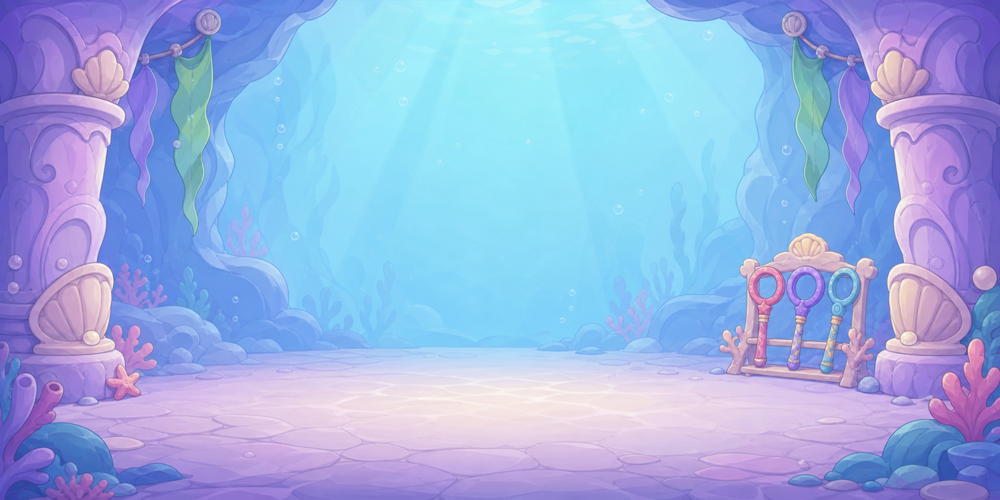
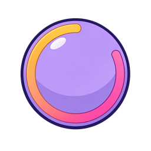
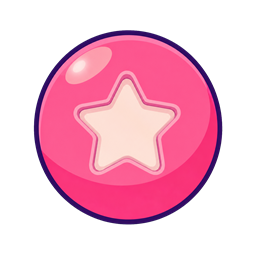

Shared training artwork: three missing source evaluations
The existing CombatTutorial grotto and shared encounter tap/hold cues now have individual written source opinions. This is a source-and-binding trace, not an actual played training audit or a Geologist lesson. No production pixels or frozen game files changed.
Complete fourteen individual opinions and source hashes · Current individual register
D1V2-0048 · 4.6/5 source

assets/castle/training/training_grotto_backdrop.pngThe broad cool aqua central opening and lavender/cream rock pillars frame a clear play area. Sparse floor bands remain high-key and the shell forms are rounded, with restrained navy/plum contour. The baked wand rack is a decorative corner feature, not a scored interactive target. Source style 4.6; the 2048 × 1024 runtime file is a whole-canvas resized derivative, so its dimensions do not prove native 2048-square coverage. Actual Mobile training presentation and 3D migration remain separate.
Binding: CombatTutorial TRAINING_BACKDROP_PATH and _add_training_backdrop; reads this picture through a TextureRect. This is CombatTutorial background art, not Geologist Opera training.
D1V2-0049 · 4.6/5 source

assets/castle/training/verb_chip_hold.pngThe simple rounded lavender chip has a clean dark-purple border, broad painted value bands and a warm yellow-to-pink partial ring. Its large grouped marks read as a compact interface cue. This symbolic UI function can use restrained graphic simplification without replacing an illustrated room or character. The still does not by itself demonstrate sustained touch; hold timing/hand/voice require actual encounter review.
Binding: EncounterGestureGuide2D.HOLD_CHIP_PATH, _ready and _draw;82px noninteractive cue when mode==hold.
D1V2-0050 · 4.6/5 source

assets/castle/training/verb_chip_tap.pngA single large cream star within the warm pink round chip has a clear purple outer contour and calm highlights. Its silhouette is readable as a small interface symbol and fits the pastel toy-playset palette. The static star does not by itself teach a tap; the actual pointer motion and verbal cue are separate evidence.
Binding: EncounterGestureGuide2D.TAP_CHIP_PATH, _ready and _draw;82px noninteractive cue for non-hold modes.
Eleven separately evaluated background components
Left shell pillar · 4.6/5 source
Broad lavender stone, cream shell capital and rounded base remain clear against the aqua center.
Right shell pillar · 4.6/5 source
The matching cream/lavender support preserves rounded stone and leaves the center unobstructed.
Left purple hanging pennant · 4.6/5 source
One broad cool purple leaf-like form provides sparse framing, without high-contrast texture.
Left green hanging pennant · 4.6/5 source
The restrained green/aqua hanging form remains subordinate to the clear training area.
Right green hanging pennant · 4.6/5 source
The broad leaf banner and simple diagonal painted bands repeat the room palette calmly.
Right purple hanging pennant · 4.6/5 source
The short purple companion banner frames the right pillar without filling the center.
Pink wand in corner rack · 4.5/5 source
The pink ring-ended wand is decorative baked scenery with a small visible loop. The source reaches the floor provisionally; do not infer target readability from an enlarged source.
Lavender wand in corner rack · 4.5/5 source
The separate lavender loop and warm handle fit the surrounding palette. It remains one baked decorative object and has no individual interactive evidence.
Aqua wand in corner rack · 4.5/5 source
The cyan loop-ended wand provides a third simple color distinction. Corner rack detail should stay subordinate to the active encounter, which is unreviewed here.
Open central training field · 4.6/5 source
A broad light aqua value field gives clear potential figure-ground separation. No new target or job mechanic is inferred from this still.
Pale lavender floor · 4.6/5 source
Calm broad floor bands provide simple support and avoid dense repeated detail in the play area.
Current source style 4.6 does not grant complete training/action/device/child/owner acceptance. Existing native background coverage and measured 3D debt remain separate.